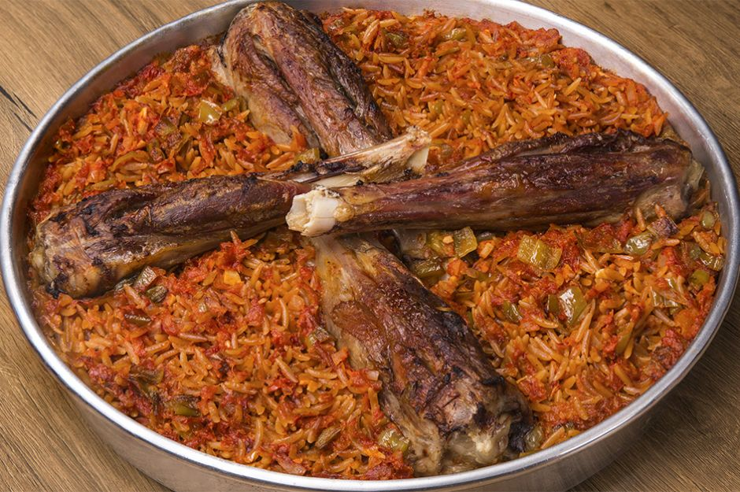

Ankara Tava
Kaç Kişilik
6 Kişilik
Hazırlama Süresi
30 Dakika
Pişirme Süresi
65 Dakika
Malzeme Listesi
- 4 adet kuzu incik
- 3 su bardağı arpa şehriye
- 2 adet kuru soğan (yemeklik doğranmış)
- 3 adet domates (rendelenmiş)
- 2 yemek kaşığı tereyağ (1 kaşığı sos için)
- 1 yemek kaşığı domates salçası
- 3,5 su bardağı sıcak su (1/2 su bardağı sos için kullanılacak)
Yapılışı
Bir tencerede sıvı yağ ve 1 yemek kaşığı tereyağ ile şehriyeleri renk değiştirinceye kadar kavurun. Renk değiştirdikten sonra ocaktan alın ve fırına girebilecek bir tepsi üzerine şehriyeleri yayın.. Kuzu incikleri tencerede 20-25 dakika her tarafı eşit kızaracak şekilde yarı pişirin Fırında da pişmeye devam edeceği için içi çiğ kalmayacaktır. Ayrı bir tavada 1 yemek kaşığı tereyağı ile soğanları pembeleşinceye kadar kavurun. Çorbayı kaynayana kadar orta ateşte ardından da kısık ateşte 15 dakika kadar pişirin. Daha pürüzsüz bir kıvam alması için blenderdan geçirin. Biberleri ve sarımsakları da soğanların üzerine ekleyin ve kavurmaya devam edin. Domates ve biber salçalarını da üzerine ekleyin ve kokusu çıkana kadar kavurup rendelenmiş domatesi ekleyin. Rendelenmiş domatesler pişerken 1/2 su bardağı sıcak suyu sosun üzerine dökün ve bir taşım kaynattıktan sonra ocaktan alın. Ardından kuzu incikleri şehriyenin üzerine dizip, şehriyelerin üzerini iki parmak geçecek kadar sıcak su ekleyin. 190 derece fırında etler pişip, şehriyeler suyun çekene kadar yaklaşık 40 dakika pişirin ve sıcak servis edin.
Bir tencerede sıvı yağ ve 1 yemek kaşığı tereyağ ile şehriyeleri renk değiştirinceye kadar kavurun. Renk değiştirdikten sonra ocaktan alın ve fırına girebilecek bir tepsi üzerine şehriyeleri yayın.. Kuzu incikleri tencerede 20-25 dakika her tarafı eşit kızaracak şekilde yarı pişirin Fırında da pişmeye devam edeceği için içi çiğ kalmayacaktır. Ayrı bir tavada 1 yemek kaşığı tereyağı ile soğanları pembeleşinceye kadar kavurun. Çorbayı kaynayana kadar orta ateşte ardından da kısık ateşte 15 dakika kadar pişirin. Daha pürüzsüz bir kıvam alması için blenderdan geçirin. Biberleri ve sarımsakları da soğanların üzerine ekleyin ve kavurmaya devam edin. Domates ve biber salçalarını da üzerine ekleyin ve kokusu çıkana kadar kavurup rendelenmiş domatesi ekleyin. Rendelenmiş domatesler pişerken 1/2 su bardağı sıcak suyu sosun üzerine dökün ve bir taşım kaynattıktan sonra ocaktan alın. Ardından kuzu incikleri şehriyenin üzerine dizip, şehriyelerin üzerini iki parmak geçecek kadar sıcak su ekleyin. 190 derece fırında etler pişip, şehriyeler suyun çekene kadar yaklaşık 40 dakika pişirin ve sıcak servis edin.